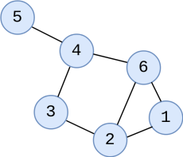
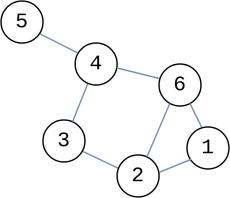
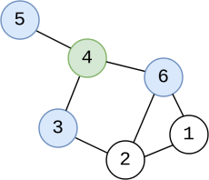
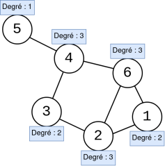
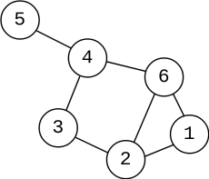
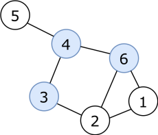

Introduction aux graphes
Définition
Un graphe est une structure mathématique utilisée pour modéliser des relations entre objets.
Il est composé de deux éléments principaux : les sommets (ou nœuds) et les arêtes (ou liens).
Voyons ensemble les graphes, dans le cadre des réseaux sociaux.
vocabulaire
Sommets
Les sommets sont les entités individuelles dans le graphe. Un sommet peut comporter une information, comme par exemple un nom, une lettre ou un numéro.
Par exemple, dans un réseau social, chaque personne serait un sommet.
Exemple:

Les sommets sont indiqués en bleu
Arêtes
Les arêtes sont les connexions entre les sommets. Chaque arête est donc reliée à deux sommets.
Dans l’exemple du réseau social, une arête pourrait représenter une relation d’amitié entre deux personnes.
Exemple:

Les arêtes sont indiquées en bleu
Voisins
Deux sommets sont dits voisins s’ils sont reliés par une arête.
Dans notre exemple de réseau social, deux personnes sont voisines si elles sont amies.
Exemple:

Les voisins du sommet vert sont indiqués en bleu
Degrés
Le degré d’un sommet est le nombre d’arêtes qui lui sont connectées, autrement dit le nombre de voisins de ce sommet.
Dans le contexte d’un réseau social, le degré d’une personne serait le nombre de ses amis.
Exemple:

Les degrés de chaque sommet sont indiqués en bleu
algorithmes sur les graphes
Excentricité d'un sommet
L'excentricité d'un sommet est la distance du sommet le plus éloigné. Cette distance est calculée en prenant le chemin le plus court.
Exemple:

Dans cet exemple :
L'excentricité du sommet 1 est de 3 car le sommet le plus loin est 5 qui est à distance 3.
L'excentricité du sommet 2 est de 3.
L'excentricité du sommet 3 est de 2.
L'excentricité du sommet 4 est de 2.
L'excentricité du sommet 5 est de 3.
L'excentricité du sommet 6 est de 2.
Rayon
Le rayon d’un graphe est la plus petite excentricité parmi tous les sommets du graphe.
Dans un réseau social, le rayon pourrait donner une idée de la « portée » d’une information (combien de « sauts » elle doit faire pour atteindre tout le monde).
Diamètre
Le diamètre d’un graphe est la plus grande excentricité parmi tous les sommets du graphe.
De même, le diamètre pourrait donner une idée de la séparation maximale entre deux personnes dans le réseau.
Exemple:
Toujours dans le même exemple, le rayon est de 2, et le diamètre est de 3.
Centre d'un graphe
Le centre d’un graphe est l’ensemble des sommets dont l’excentricité est égale au rayon du graphe.
Dans le contexte des réseaux sociaux, le centre d’un graphe peut être interprété comme les utilisateurs les plus « centraux » ou les plus influents dans le réseau.
Ces utilisateurs sont souvent ceux qui sont les plus proches de tous les autres utilisateurs dans le réseau, ce qui signifie qu’ils peuvent diffuser des informations plus rapidement et plus efficacement à travers le réseau.
Exemple:

Les sommets bleus représentent les différents centres du graphe.
Graphe connexe
Graphe connexe
Un graphe connexe est un graphe dans lequel tous les sommets sont accessibles les uns depuis les autres.
Autrement dit, pour n’importe quelle paire de sommets, il existe au moins un chemin qui relie ces deux sommets.
Dans un réseau social, un graphe connexe signifie que chaque utilisateur peut atteindre tous les autres, directement ou indirectement, via une chaîne de relations.
Composante connexe
Une composante connexe est un sous-graphe dans lequel tous les sommets sont reliés entre eux, mais aucun sommet de cette composante n’est relié à un sommet extérieur.
Un graphe peut donc être composé :
- d’une seule composante connexe → il est connexe
- de plusieurs composantes connexes → il est non connexe
Dans un réseau social, chaque composante connexe représente un groupe d’utilisateurs isolé du reste du réseau (aucune relation entre les groupes).
Exemple : graphe non connexe

Dans cet exemple, le graphe comporte deux composantes connexes.
Chaque groupe est totalement connexe en interne, mais aucun lien n’existe entre les deux groupes.
Petit monde de Milgram
La théorie du « petit monde » stipule que tout individu dans le monde peut être relié à n’importe quel autre individu par une chaîne de relations sociales ne dépassant pas six relations.
Contexte
L’expérience a été menée par le psychologue Stanley Milgram dans les années 1960. L’objectif de l’expérience était de tester la théorie du « petit monde » vue précédement.
Milgram a demandé à des participants de différentes régions des États-Unis d’envoyer une lettre à une personne cible en la passant uniquement à des connaissances personnelles.
Milgram a constaté que la lettre atteignait généralement la cible en six étapes ou moins, d’où l’idée des « six degrés de séparation ». Cela a soutenu la théorie du « petit monde » et a montré que nous sommes tous beaucoup plus connectés que nous ne le pensons.